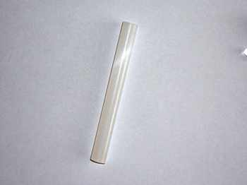

Устройство для изготовления стопинов (ручная вискомашина) ©
Авторское изобретение

Характеристики:
Приблизительный росход ЧП – менее 5 грам на метр стопина.
Со 100 грам ЧП получаеться больше 22 метров стопина.
Диаметр стопина на выходе из формовочного сопла 2,5 – 3 мм
Скорость горения = 0,7 см /сек
Я давно мечтал о вискомашине,но небыло ни електродвигателя,ни подшипников,и еще многих деталей.Она казалась мне недосягаемой мечтой,поэтому мне пришла в голову мысль:упростить конструкцию,выбросить много лишних(по моему мнению) деталей.
Получилась отличная вещь,на изготовление которой уходит меньше часа.
Для изготовления устройства необходимо:
1) Старый СD/DVD диск
2) 12 болтов длинной 7см і диаметром ? 5 мм , гайки
3) Картон
4) Шприц на 20 мл (2 шт)
5) Заклепки (2 шт) для пистолета диаметром ? 4,8 мм

6) Соломинка от шарика на палочке – это такая белая пластиковая трубка длинной примерно полметра.(коктельная соломка не подойдет!)
7) Термоклей

8) ХБ нитка (цвет не имеет значения )
9) ЧП – мякоть (75/10/15 KNO3/S/C) 100 гр.
10) Крахмал
Сборка :
Нарисовать на диске круг радиусом 4.5 см и поделить его на 12 равных частей.Затем просверлить дыры,и закрепить в них болты.На болты одеть картонные кружки – благодаря им котушки с нитками будут свободно вращатся и не будут застревать.


В шприце запаеваем носик и вместо него сверлим сверлом ? 4,9 мм отверстие точно посредине.В дырку вставляем алюминиевый цилиндр из заклепки.На торчащий кончик надеваем 4 см обрезок трубочки ,а в другой коней трубки засовываем еще один цилиндр – у нас получилось формовочное сопло.

В диске увеличиваем центральную дыру так чтобы в нее свободно входил шприц на 20 мл. Соединяем диск з камерой с помощью термоклея (устройство готово )


Что нужно сделать для удобного использования приспособления:
Для этого берем другой шприц и как можно больше розсверливаем его носик,обмазываем носик термоклеем і насаживаем на него 12см обрезок трубочки

Изготовление стопина:
Закрепить устройсво как можно выше над землей - 1,5метра будет достаточно (я закреплял в штативе), провести нитки через камеру и сопло наружу, чтобы нитки шли паралельно одна другой и не перехрещивались(у меня на фото 8 шпуль :больше не нашел

, но менше чем 8 брать нельзя . )
Теперь идем на кухню і делаем густой крахмальний клейстер: в отдельный стакан засыпаем мякоть і добавляем понемногу горячий клейстер, хорошо перемешиваем, клейстер добавлять пока смесь по консистенции не станет похожа на сметану .
Берем наш модифицирований шприц и втягиваем им сметану : главное - без воздушных пузырьков. Заполняем сметаной снизу доверху по мере наполнения камеру девайса. Тянем за нитки, которые свисают с формовочного сопла и протягиваем немного сухой нитки.Дальше идет хороший ровный стопин . Отрезаем нужные куски (у меня они по 1,2 метра) ,не забываем оставлять небольшой кусок, торчащий из сопла, для того чтобы иметь возможность вытянуть следующий стопин. Вешаем все стопины на солнышко,чтоб хорошо просохли,а потом покрываем тонким слоем лака для защиты от влаги и мех. повреждений.


Внимание!!!Ахтунг!!!!Варнинг!!!!!!
При протягивании важно не потерять нитку - если одна нитка не будет протягиваться, то стопин будет неровный и прийдеться отрезать бракованый кусок.
Для заполнения камеры используем только шприц, и перед каждым набором помешиваем сметану и не даем падать уровню сметаны в камере больше,чем на половину.
Если у Вас стопин пошел без покрытия - это значит,что в камере был воздух либо Вы слишком быстро тянете.
Если закончилась сметана и уровень в камере ниже половины камеры, то скорость протягивания ниток через камеру нужно уменьшить и сошкрести остатки со стенок в глубь камеры .
CURIUM ©P.S. відео горіння стопіну покритого лаком (10 см) від нього лишається шлак але прогорає всюди відказів ще не було!!!
http://www.youtube.com/watch?v=fOwCAXNInso

 Быстрый ответ
Быстрый ответ